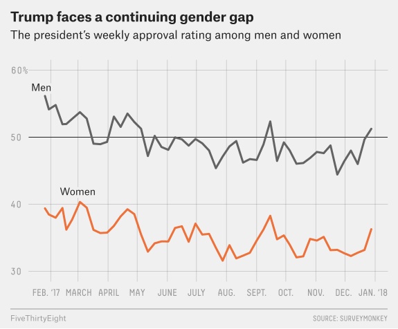

18 Inference About Proportions
What we learned so far are the inference methods for population means and variances that are from normal distributions. Our sample data are numerical values. What if our data are categorical, for example, gender, approval or not, etc? In this chapter, we are talk about inference about proportions. When we have categorical data, we are often interested in the proportion of some category of the categorical variable. We may wonder if the proportion of female is greater than 40% for statistics major students. We may also want to estimate the true proportion of the voters who votes for candidate A before all the votes are tallied.
18.1 Categorical Data
One Categorical Variable with Two Categories
We start with one categorical variable with two categories. Let \(X\) be the categorical variable Gender with 2 categories, Male and Female. Our data table may look like the following. The first subject is Male, so we mark it in the Male column. The second subject is Female, so we check it in the Female column, and so on.
| Subject | Male | Female |
|---|---|---|
| 1 | x | |
| 2 | x | |
| \(\vdots\) | \(\vdots\) | \(\vdots\) |
| \(n\) | x |
When we collect the categorical data, usually we are interested in their count. We wonder which category has more counts than the other. So we can make a one-way frequency/count table as follows. It is one-way because the count table is for one categorical variable only. Here in the data there are \(y\) males and \(n-y\) females, where \(n\) is the sample size.
| \(X\) | Count |
|---|---|
| Male | \(y\) |
| Female | \(n-y\) |
Now the number of males or the proportion of males can be viewed as a random variable because the count, \(Y\), or the proportion \(Y/n\) varies from sample to sample. Suppose you want to learn the proportion of male students at Marquette, what would you do. You would probably randomly sample some Marquette students, and count how many of them are males, right? If you do the sampling again, the count will be different from the count you got previously. Therefore, to learn the male proportion, we could use the sample proportion \(Y/n\) as an estimator that follows some (sampling) distribution.
One question for you. What probability distribution might be appropriate for the count, \(Y\)?
Probability Distribution for Count Data: Two Levels
In our example, each subject is either Male or Female, and with the fixed sample size, we wonder how many subjects are Males. Any probability distribution comes into your mind? Well, \(binomial(n, \pi)\) could be a good option for count data with 2 categories.
- Fixed number of trials: We can view each sampled subject as one trial in the experiment, and we have fixed \(n\) subjects.
- Each trial results in one of two outcomes. Clearly, in our survey, there are only two possible answers. Each subject is either Male or Females.
- Trials are independent. If the subjects are randomly sampled, the students in the sample are independent.
- The probability of success \(\pi\) is constant: The proportion of being in category Male is \(\pi\), which is constant at the given point of time.
The count \(Y\) of male students, or the number of success, has the binomial probability \[P(Y = y \mid n, \pi) = \frac{n!}{y!(n-y)!}\pi^{y}(1-\pi)^{n-y}\]
Do we know \(\pi\)? Absolutely not! The parameter \(\pi\) is the proportion (or relative frequency) of male students, which is what we want to estimate and learn from data. Therefore, our goal is to estimate or test the population proportion, \(\pi\), of the category Male given the assumption that the count of Male \(Y\) is binomially distributed \(Y \sim binomial(n, \pi)\).
18.2 Inference for a Single Proportion
Hypothesis Testing for \(\pi\)
The point estimator for the population proportion \(\pi\) is the sample proportion \(Y/n\). The true probability is approximated by the relative frequency in the sample data. Let’s first learn how to do testing for \(\pi\). This is the one-sample proportion \(z\) test.
Step 0: Method Assumptions
- The method requires that \(n\pi_0 \ge 5\) and \(n(1-\pi_0) \ge 5\) where \(\pi_0\) is the hypothesized value or the value to be tested. The larger \(n\pi_0\) and \(n(1-\pi_0)\) are, the better. In fact, the method relies on the central limit theorem, and uses standard normal distribution to do the test. Large \(n\pi_0\) and \(n(1-\pi_0)\) leads to better normal approximation.
Step 1: Set the Null and Alternative Hypothesis
- We are interested in the proportion of some category being equal to, greater than or less than some value. \(\begin{align} &H_0: \pi = \pi_0 \\ &H_1: \pi > \pi_0 \text{ or } \pi < \pi_0 \text{ or } \pi \ne \pi_0 \end{align}\)
Step 2: Set the Significance Level, \(\alpha\)
Step 3: Calculate the Test Statistic
- With the central limit theorem, it can be shown that the sampling distribution of the statistic \(Y/n\) is approximately normal with mean \(\pi\) and standard error, \(\sqrt{\frac{\pi(1-\pi)}{n}}\). Therefore, \[Z = \frac{Y/n - \pi}{\sqrt{\frac{\pi(1-\pi)}{n}}} \dot\sim N(0, 1).\] Then under the null \(H_0\), the test statistic is \(z_{test} = \dfrac{\hat{\pi} - \pi_0}{\sqrt{\frac{\pi_0(1-\pi_0)}{n}}}\) where \(\hat{\pi} = \frac{y}{n}\) is the realized sample proportion.
Step 4-c: Find the Critical Value \(z_{\alpha}\) (one-tailed) or \(z_{\alpha/2}\) (two-tailed)
- Same as before.
Step 5-c: Draw a Conclusion Using Critical Value Method
- \(H_1: \pi > \pi_0\): Reject \(H_0\) in favor of \(H_1\) if \(z > z_{\alpha}\)
- \(H_1: \pi < \pi_0\): Reject \(H_0\) in favor of \(H_1\) if \(z < -z_{\alpha}\)
- \(H_1: \pi \ne \pi_0\): Reject \(H_0\) in favor of \(H_1\) if \(|z| > z_{\alpha/2}\)
Step 6: Restate the Conclusion in Nontechnical Terms, and Address the Original Claim
Confidence Interval for \(\pi\)
To construct the confidence interval for \(\pi\), we rely on some assumption too. Unlike testing that has a hypothesized value \(\pi_0\), there is no hypothesized value in confidence interval, and we only use information from the data to get an interval. To ensure that the normal approximation is fairly good, the interval formula requires \(n\hat{\pi} \ge 5\) and \(n(1-\hat{\pi}) \ge 5\). Can you see the difference between this requirement and the testing requirement?
The \(100(1 - \alpha)\%\) confidence interval for \(\pi\) is \[\hat{\pi} \pm z_{\alpha/2}\sqrt{\frac{\pi(1-\pi)}{n}}\] where \(\hat{\pi} = y/n\). Since \(\pi\) is unknown, we use its estimate \(\hat{\pi}\) instead: \[\hat{\pi} \pm z_{\alpha/2}\sqrt{\frac{\hat{\pi}(1-\hat{\pi})}{n}}\]
Such normal approximation interval is called the Wald interval.
Example: Exit Poll
Suppose we collect data on 1,000 voters in an election with only two candidates, R and D, and every voter must vote for either one of them.
| Voter | R | D |
|---|---|---|
| 1 | x | |
| 2 | x | |
| \(\vdots\) | \(\vdots\) | \(\vdots\) |
| 1000 | x |

Based on the data, we want to predict who won the election. Let \(Y\) be the number of voters that voted for R. Assume the count, \(Y\), is sampled from \(binomial(n = 1000, \pi)\), and \(\pi = P(\text{a voter voted for R}) =\) (population) proportion of all voters that for R. Parameter \(\pi\) is the unknown parameter to be estimated or tested. In an exit poll of 1,000 voters, 520 voted for R. At \(\alpha = 0.05\), predict whether or not R won the election.
Hypothesis Testing
Step 0
- \(\pi_0 = 1/2\). \(n\pi_0 = 1000(1/2) = 500 \ge 5\) and \(n(1-\pi_0) \ge 5\)
Step 1
- R won the election means that the proportion of all voters voting for R is greater than 50%. \(\begin{align} &H_0: \pi \le 1/2 \\ &H_1: \pi > 1/2 \text{ (more than half voted for R)} \end{align}\)
Step 2
- \(\alpha = 0.05\)
Step 3
- \(z_{test} = \frac{\hat{\pi} - \pi_0}{\sqrt{\frac{\pi_0(1-\pi_0)}{n}}} = \frac{\frac{520}{1000} - 0.5}{\sqrt{\frac{0.5(1-0.5)}{1000}}} = 1.26\)
Step 4-c
- \(z_{\alpha} = z_{0.05} = 1.645\)
Step 5-c
- Reject \(H_0\) in favor of \(H_1\) if \(z_{test} > z_{\alpha}\).
- Since \(z_{test} < z_{\alpha}\), we do not reject \(H_0\).
Step 6
We do not have sufficient evidence to conclude that R won.
We make the same conclusion using the \(p\)-value method.
\[ p\text{-value} = P(Z > 1.26) = 0.1 > 0.05\]
Confidence Interval
First we check the assumption: + \(n\hat{\pi} = 1000(0.52) = 520 \ge 5\) and \(n(1-\hat{\pi}) = 480 \ge 5\).
- Estimate the proportion of all voters that voted for R using a 95% confidence interval.
\[\hat{\pi} \pm z_{\alpha/2}\sqrt{\frac{\hat{\pi}(1-\hat{\pi})}{n}} = 0.52 \pm z_{0.025}\sqrt{\frac{0.52(1-0.52)}{1000}} = (0.49, 0.55).\]
Computation in R
To perform the one-sample proportion \(z\) test in R, we use the function prop.test(). The argument correct tells us whether or not we want to do continuity correction. Our method here does not do continuity correction. It does not matter much when our method assumption is satisfied.
To obtain the confidence interval, we should set alternative = "two.sided" because the interval is two sided. Be careful. The interval we learn is the Wald interval. However, the interval from the prop.test() output is not the Wald interval, but the so-called Wilson interval. There are lots of variants of confidence intervals for binomial proportions, and one can use the BinomCI() function in the DescTools package to obtain them.
## one proportion test using normal approximation
prop.test(x = 520, n = 1000, p = 0.5, alternative = "greater",
correct = FALSE)
1-sample proportions test without continuity correction
data: 520 out of 1000, null probability 0.5
X-squared = 1.6, df = 1, p-value = 0.103
alternative hypothesis: true p is greater than 0.5
95 percent confidence interval:
0.4939945 1.0000000
sample estimates:
p
0.52 # Use alternative = "two.sided" to get CI
prop_ci <- prop.test(x = 520, n = 1000, p = 0.5,
alternative = "two.sided", correct = FALSE)
prop_ci$conf.int[1] 0.4890177 0.5508292
attr(,"conf.level")
[1] 0.95## The Wilson interval and Wald interval
DescTools::BinomCI(x = 520, n = 1000, method = "wilson") est lwr.ci upr.ci
[1,] 0.52 0.4890177 0.5508292DescTools::BinomCI(x = 520, n = 1000, method = "wald") est lwr.ci upr.ci
[1,] 0.52 0.4890351 0.5509649
Warning
Doing inference with normal approximation to binomial variables is more complicated than what we discuss here. The main reason is that we use a continuous normal distribution to approximate a discrete binomial distribution. Check the Wiki page if you don’t believe it. No worries at this moment unless you want to be a statistician doing research in this field!
Note
If you look at the proportion test output carefully, you’ll find that the test statistic is a chi-squared test statistic, not the \(z\) test statistic. In fact, the square of the \(z\) statistic is equal to the chi-squared statistic with degrees of freedom one, i.e., \(z_{test}^2 = \chi^2_{1, test}\), and the \(z\) test here is equivalent to the chi-squared test discussed in the next chapter (Chapter 19) for two-sided tests.
Note
The method we learn here uses normal approximation to binomial variables. One can also perform the exact binomial test that directly uses binomial probabilities to calculate the \(p\)-value and do the testing. As its name suggests, it is what we should use for binomial inference because it is exact. If the requirement of the normal approximation method we learn is not met, the exact binomial test should be used. When the sample size is large, and the expected proportion is not extreme being close to 0 or 1, the normal approximation method and the exact binomial test have pretty similar inference results.
We can use binom.test() function to perform the exact binomial test. The page discusses the relationship between the exact binomial test and other methods.
## exact binom test
binom.test(x = 520, n = 1000, p = 0.5, alternative = "greater")
Exact binomial test
data: 520 and 1000
number of successes = 520, number of trials = 1000, p-value = 0.1087
alternative hypothesis: true probability of success is greater than 0.5
95 percent confidence interval:
0.4934948 1.0000000
sample estimates:
probability of success
0.52 ## confidence interval
bi <- binom.test(x = 520, n = 1000, p = 0.5, alternative = "two.sided")
bi$conf.int[1] 0.4885149 0.5513671
attr(,"conf.level")
[1] 0.9518.3 Inference for Two Proportions
Many times we want to compare two population proportions, say \(\pi_1\) and \(\pi_2\). We could assume there are two independent binomial experiments with the same possible outcomes. For example, we could have male and female voters, and every voter in each group has an opinion about president’s performance whose outcome is either Approve or Not approve. Let the number of male voters approving the performance is \(Y_1\) and the number of female voters approving the performance is \(Y_2\). We can assume \(Y_1\) and \(Y_2\) both follow binomial distribution but with their own parameters, \(n_1\) and \(\pi_1\) for \(Y_1\), and \(n_2\) and \(\pi_2\) for \(Y_2\). Political analysts may want to know whether or not the male presidential approval rate \(\pi_1\) is higher than the female approval rate \(\pi_2\).
| Group 1 | Group 2 |
|---|---|
| \(n_1\) trials | \(n_2\) trials |
| \(Y_1\) number of successes | \(Y_2\) number of successes |
| \(Y_1 \sim binomial(n_1, \pi_1)\) | \(Y_2 \sim binomial(n_2, \pi_2)\) |
- \(\pi_1\): Population proportion of success of Group 1
- \(\pi_2\): Population proportion of success of Group 2

Hypothesis Testing for \(\pi_1\) and \(\pi_2\)
The method introduced here is based on the central limit theorem and normal approximation to binomial distribution. The idea is similar to the one sample proportion \(z\) test, and we perform two sample proportion \(z\) test.
Step 0: Check Method Assumptions
- In order to perform the \(z\) test, the following requirements must be met: \(n_1\hat{\pi}_1 \ge 5\), \(n_1(1-\hat{\pi}_1) \ge 5\) and \(n_2\hat{\pi}_2 \ge 5\), \(n_2(1-\hat{\pi}_2) \ge 5\)
Step 1: Set the Null and Alternative Hypothesis
- \(\begin{align} &H_0: \pi_1 = \pi_2 \\ &H_1: \pi_1 > \pi_2 \text{ or } \pi_1 < \pi_2 \text{ or } \pi_1 \ne \pi_2 \end{align}\)
Step 2: Set the Significance Level, \(\alpha\)
Step 3: Calculate the Test Statistic
- It can be shown that \[\frac{\frac{Y_1}{n_1} - \frac{Y_2}{n_2} - (\pi_1 - \pi_2)}{\sqrt{\frac{\pi_1(1-\pi_1)}{n_1} + \frac{\pi_2(1-\pi_2)}{n_2}}} \dot\sim N(0, 1)\] Under the null hypothesis, \(\pi_1 = \pi_2 = \pi\), with the sample data, the statistic is reduced to \[\frac{\hat{\pi}_1 - \hat{\pi}_2}{\sqrt{\pi(1-\pi)(\frac{1}{n_1} + \frac{1}{n_2})}},\] where \(\hat{\pi}_1 = y_1/n_1\) and \(\hat{\pi}_2 = y_2/n_2\). We still cannot use this quantity as a test statistic because it involves the unknown parameter \(\pi\). Like two sample pooled \(t\) test, since \(\pi_1 = \pi_2 = \pi\) under \(H_0\), we combine the two samples using all the trials to get a better pooled sample proportion \(\bar{\pi} = \frac{y_1+y_2}{n_1+n_2}\) to estimate the common proportion \(\pi\). Therefore, the test statistic is
\[z_{test} = \dfrac{\hat{\pi}_1 - \hat{\pi}_2}{\sqrt{\bar{\pi}(1-\bar{\pi})(\frac{1}{n_1} + \frac{1}{n_2})}}.\]
Step 4-c: Find the Critical Value \(z_{\alpha}\) (one-tailed) or \(z_{\alpha/2}\) (two-tailed)
Same before.
Step 5-c: Draw a Conclusion Using Critical Value Method
-
Reject \(H_0\) in favor of \(H_1\) if
- \(H_1: \pi_1 > \pi_2\): Reject \(H_0\) in favor of \(H_1\) if \(z > z_{\alpha}\)
- \(H_1: \pi_1 < \pi_2\): Reject \(H_0\) in favor of \(H_1\) if \(z < -z_{\alpha}\)
- \(H_1: \pi_1 \ne \pi_2\): Reject \(H_0\) in favor of \(H_1\) if \(|z| > z_{\alpha/2}\)
Step 6: Restate the Conclusion in Nontechnical Terms, and Address the Original Claim
Confidence Interval for \(\pi_1 - \pi_2\)
To get the Wald confidence interval for \(\pi_1 - \pi_2\), it requires
\(n_1\hat{\pi}_1 \ge 5\), \(n_1(1-\hat{\pi}_1) \ge 5\) and \(n_2\hat{\pi}_2 \ge 5\), \(n_2(1-\hat{\pi}_2) \ge 5\). Again, no hypothesized values, and sample proportions are used.
The \(100(1 - \alpha)\%\) confidence interval for \(\pi_1 - \pi_2\) is \[\hat{\pi}_1 - \hat{\pi}_2 \pm z_{\alpha/2}\sqrt{\frac{\hat{\pi}_1(1-\hat{\pi}_1)}{n_1}+\frac{\hat{\pi}_2(1-\hat{\pi}_2)}{n_2}}\]
There is no pooled estimate \(\bar{\pi}\) in the interval because the interval is not constructed under the hypothesis that \(\pi_1 = \pi_2 = \pi\). The parameters \(\pi_1\) and \(\pi_2\) are estimated separately by the individual sample proportions \(\hat{\pi}_1\) and \(\hat{\pi}_2\).
Example: Effectiveness of Learning
Suppose we do a study on 300 students to compare the effectiveness of learning statistics in online vs. in-person programs. We randomly assign 125 students to the online program, and the remaining 175 to the in-person program. The exam results are shown in the table below.

| Exam Results | Online Instruction | In-Person Instruction |
|---|---|---|
| Pass | 94 | 113 |
| Fail | 31 | 62 |
| Total | 125 | 175 |
Is there sufficient evidence to conclude that the online program is more effective than the traditional in-person program at \(\alpha=0.05\)?
Hypothesis Testing
Step 0
- \(\hat{\pi}_1 = 94/125 = 0.75\) and \(\hat{\pi}_2 = 113/175 = 0.65\).
- \(n_1\hat{\pi}_1 = 94 > 5\), \(n_1(1-\hat{\pi}_1) = 31 > 5\), and \(n_2\hat{\pi}_2 = 113 > 5\), \(n_2(1-\hat{\pi}_2) = 62 > 5\)
The assumptions are satisfied.
Step 1
- Let \(\pi_1\) \((\pi_2)\) be the population proportion of students passing the exam in the online (in-person) program. \(H_0: \pi_1 = \pi_2\) vs. \(H_1: \pi_1 > \pi_2\)
Step 2
- \(\alpha = 0.05\)
Step 3
- \(\bar{\pi} = \frac{94+113}{125+175} = 0.69\)
- \(z_{test} = \dfrac{\hat{\pi}_1 - \hat{\pi}_2}{\sqrt{\bar{\pi}(1-\bar{\pi})(\frac{1}{n_1} + \frac{1}{n_2})}} = \frac{0.75 - 0.65}{\sqrt{0.69(1-0.69)(\frac{1}{125} + \frac{1}{175})}} = 1.96\)
Step 4-c
- \(z_{\alpha} = z_{0.05} = 1.645\)
Step 5-c
- Reject \(H_0\) in favor of \(H_1\) if \(z_{test} > z_{\alpha}\).
- Since \(z_{test} > z_{\alpha}\), we reject \(H_0\).
Step 6
- We have sufficient evidence to conclude that the online program is more effective.
Confidence Interval
We want to know how effective the online program is, so we estimate \(\pi_1 - \pi_2\) using a \(95\%\) confidence interval
\[\hat{\pi}_1 - \hat{\pi}_2 \pm z_{0.05/2}\sqrt{\frac{\hat{\pi}_1(1-\hat{\pi}_1)}{n_1}+\frac{\hat{\pi}_2(1-\hat{\pi}_2)}{n_2}}\] The 95% confidence interval is \[0.75 - 0.65 \pm 1.96\sqrt{\frac{(0.75)(1-0.75)}{125} + \frac{(0.65)(1-0.65)}{175}}\\ = (0.002, 0.210)\]
Because 0 is not included in this interval, we reach the same conclusion as the hypothesis testing.
Implementation in R
Below is a demonstration of how to make inferences about two proportions in R. We still use prop.test() function, but here we provide the number of successes and the number of trials in the arguments x and n respectively as a vector whose first element is for the first group and second element for the second group. Please be consistent with the order and don’t mess up.
2-sample test for equality of proportions without continuity correction
data: c(94, 113) out of c(125, 175)
X-squared = 3.8509, df = 1, p-value = 0.02486
alternative hypothesis: greater
95 percent confidence interval:
0.01926052 1.00000000
sample estimates:
prop 1 prop 2
0.7520000 0.6457143 prop_ci2 <- prop.test(x = c(94, 113), n = c(125, 175),
alternative = "two.sided", correct = FALSE)
prop_ci2$conf.int[1] 0.002588801 0.209982628
attr(,"conf.level")
[1] 0.95
Note
The two sample proportion \(z\) test is equivalent to the chi-squared test introduced in the next chapter (Chapter 19) that considers more than two possible outcomes.
pi_bar <- (94 + 113)/(125 + 175)
pi_1_hat <- 94/125
pi_2_hat <- 113/175
z_test2 <- (pi_1_hat - pi_2_hat) / (sqrt(pi_bar*(1-pi_bar)*(1/125+1/175)))
z_test2 ^ 2[1] 3.850932prop_ci2$statisticX-squared
3.850932 18.4 Exercises
- Lipitor (atorvastatin) is a drug used to control cholesterol. In clinical trials of Lipitor, 98 subjects were treated with Lipitor and 245 subjects were given a placebo. Among those treated with Lipitor, 6 developed infections. Among those given a placebo, 24 developed infections. Use a 0.05 significance level to test the claim that the rate of inflections was the same for those treated with Lipitor and those given a placebo.
- Test the claim using the critical-value and p-value methods.
- Test the claim by constructing a confidence interval.